This codelab will guide you through an example of leveraging a MuleSoft developed API as the backend for an Amazon Alexa skill. A natural-language voice experience is built to offer customers a more intuitive way to interact with the Mule application that they use everyday.
You will learn how easy it is to replace an AWS Lambda backend with an API designed and developed with MuleSoft Anypoint Platform.
Prerequisites
- Amazon Developer Account – for creating Alexa Skills
- Alexa Skills are like apps. You can enable and disable Skills, using the Alexa app or a web browser, in the same way that you install and uninstall apps on your smartphone or tablet. Skills are voice-driven Alexa capabilities. You can add Alexa Skills to your Echo to bring products and services to life. You can view available Skills and enable or disable them using your Alexa app.
- Anypoint Studio - for developing and testing Mule application
- Anypoint Studio is MuleSoft's IDE for developing and testing Mule applications.
- Anypoint Platform - to deploy Mule application to Cloudhub
- Anypoint Platform provides us the runtime to run and deploy our applications in the cloud or on-premises.
- Tools and framework for creating an API and building simpler Mule Applications (for complex applications we use Anypoint studio).
- Library to store our assets (APIs and applications) where we can view and test them, and it can be reused by other developers in the organization.
- Login in to https://developer.amazon.com/en-US/Alexa
- Go to create Alexa Skills, click the console tab then Create Skill.
- Enter Skill name i.e. "HelloWorld". Leave default settings for "Default language", "Choose a model to add to your Skill", "Choose a method to host your Skill's backend resources", then click on "Create Skill".
- Choose the "Start from Scratch" template and click "Choose".
- "Skill invocation name" (which will trigger launch request at MULE application side) is the "Skill Name" you provided while creating skill
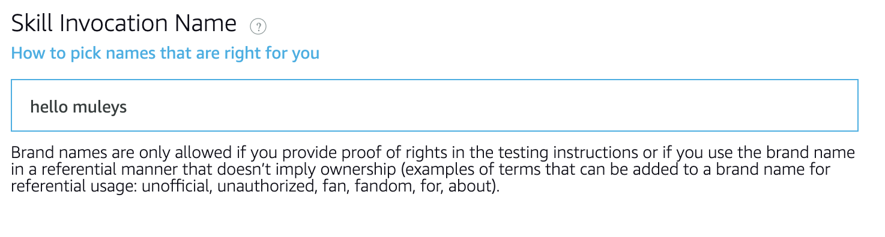
- Then we will add Intents. Go To Intents→Add Intent→Type your custom intent name-→Click "Create Custom Intent". I have created "userIntent" with one Utterance "get me the user details of {userId}". The value inside {} is called a slot.
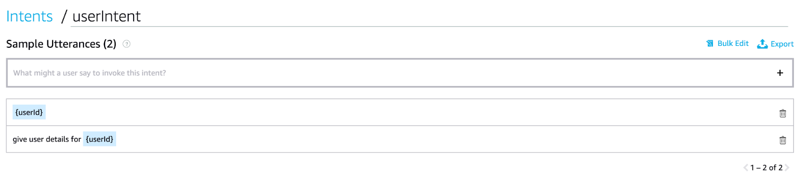
- Now define slot with Slot name as userId and and slot type as userId
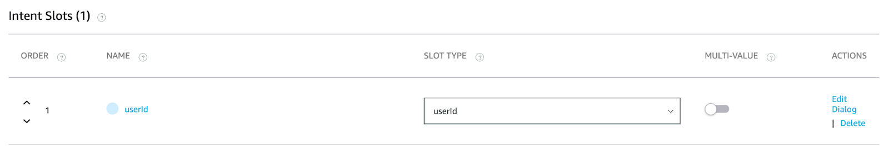
- Add values to slot type "userId". Values "ten", "nine", "eight","seven" are added
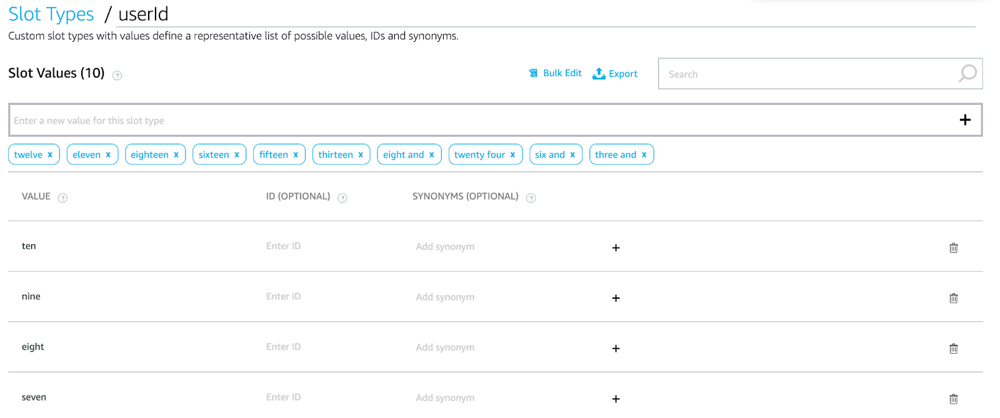
- Similarly create "byeIntent". We will be using this intent to end the session.
- Now Click on "Save Model" and then Click on "Build Model". You should get "Quick Build Successful" popup.
- Now go to the "Endpoint" tab on the "Interaction Model" window. Select "HTTPS" Service Endpoint, Paste the full API Url (Note: - link to create a self-signed certificate is explained there(in blue), you need to create a certificate as directed and upload)
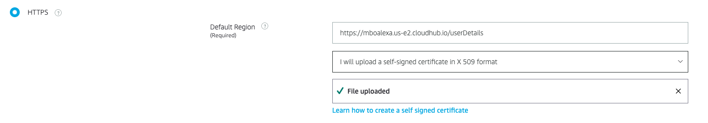
- Now click on "Save Endpoints" .You can set endpoint details later when your mule application is up and running on CloudHub because you need the full API Url to complete this step.
Things to do
- Create an HTTPS listener with a self-signed certificate configuration.
- Create the Mule app to take input from the Alexa voice command and perform requested action.
- Deploy the Mule app to Cloudhub
Step One
Create an HTTPS connection to connect to the Alexa Skill.
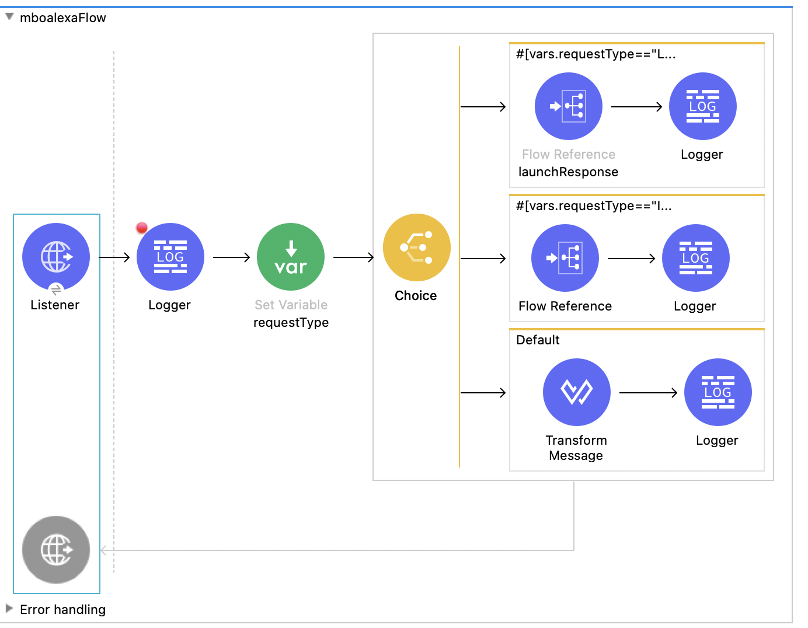
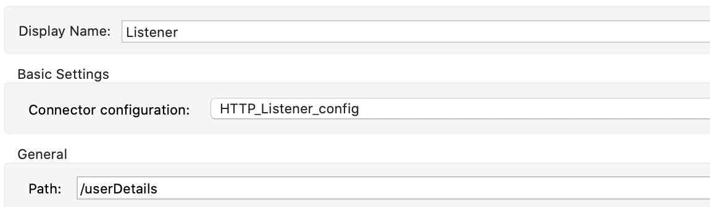
- Create a properties.yaml file to store the value of HTTP.port in location src/main/resources.
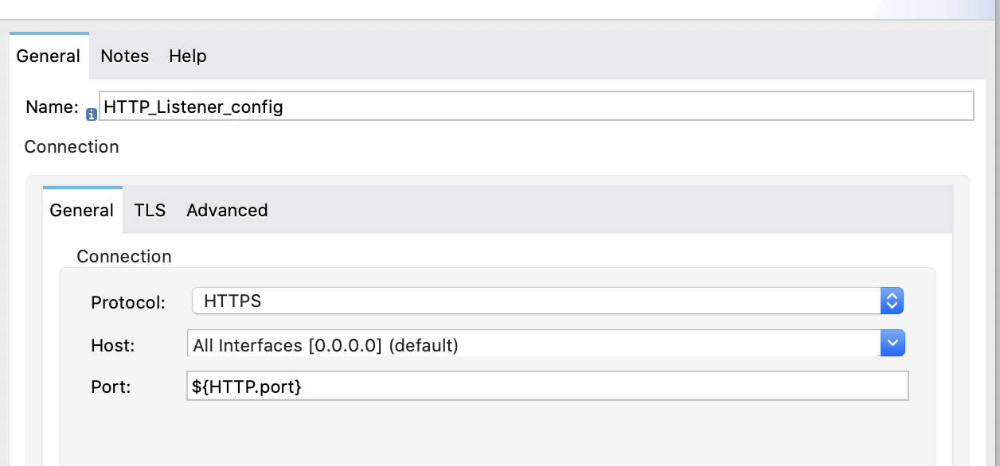
- Go to the TLS tab and configure the TLS settings (The certificate can be created with the help of documentation in the Alexa developer console. The same certificate should be used in the Alexa Skill endpoint as well as Mule application).
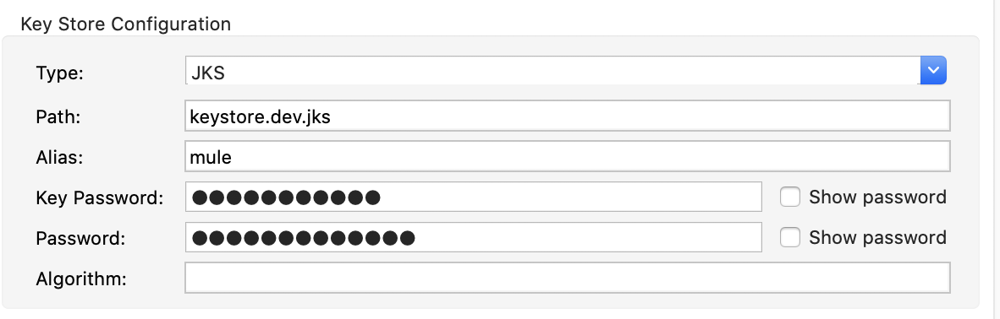
Step Two
Two types of actions can be invoked using alexa skill
- Launch - to start the session
- Intent - perform specific action
Launch section coding
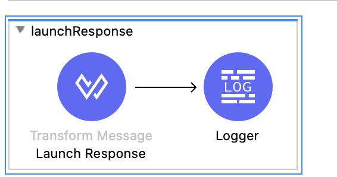
Launch JSON Response
- Line 4 to 11 - is the Alexa's voice response
- Line 12 to 20 - Alexa's response on video capable devices
- Line 21 to 27 - Text which will be prompted upon no response from user
- Line 29 - Session to remain open or close
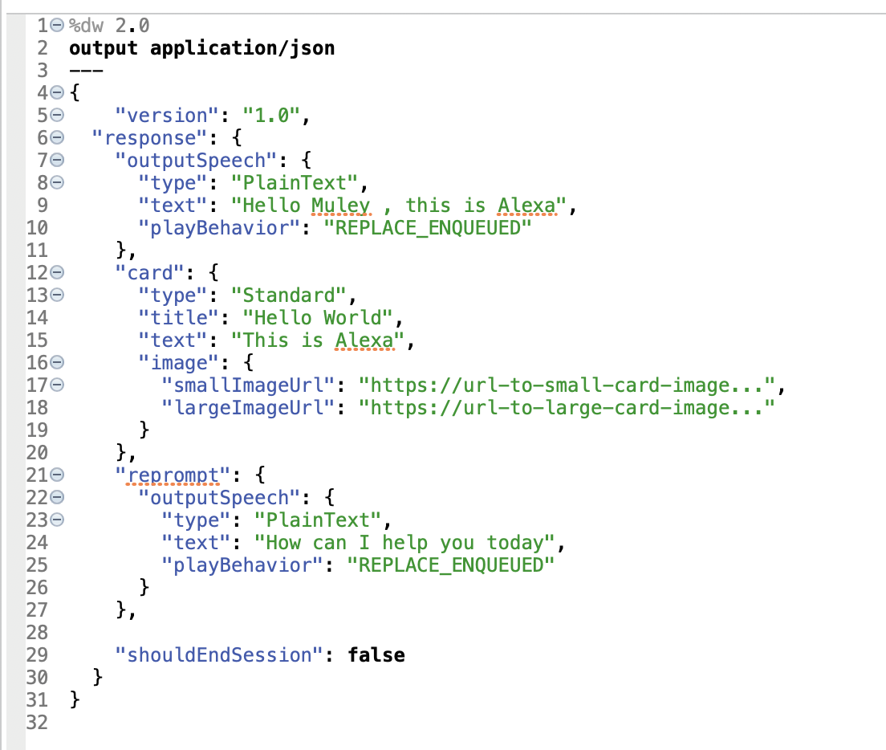
After Launch Response, let's code the Intent section
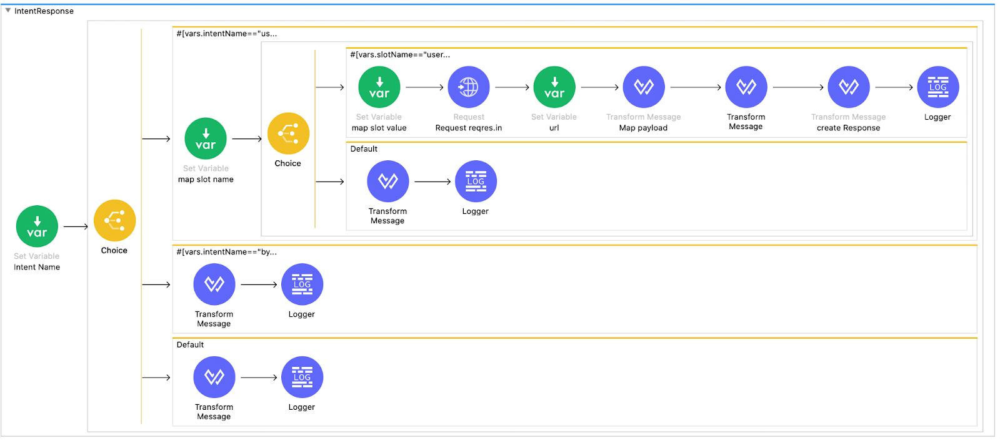
JSON response of the User Intent
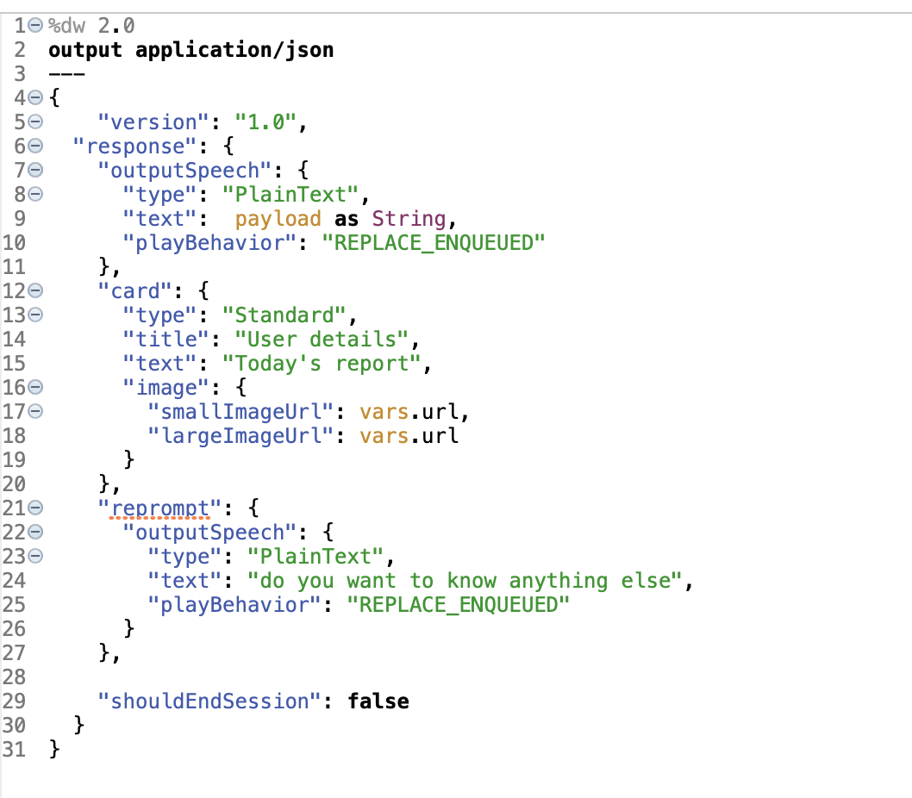
Step Three
- Similarly we will code the ByeIntent with ["shouldEndSession": true] to end the session.
- Now Test the MULE application in Advanced Rest Client or SOAP UI to ensure that your Mule
application is working.
- Upon successful testing, deploy the application to CloudHub. Your application should be in"Started state"
- Take the Full API URL from Runtime Manager and set it in the Alexa skill endpoint section.
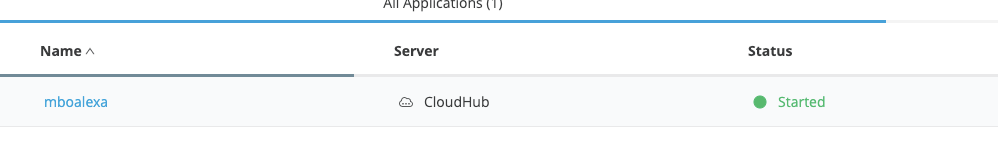
- Enable your Skill.
- Now go to the test console, select ‘Development' in "Skill testing is enabled in"
- Either you can use the mic or type commands.
- First, give the launch request command "Open hello muleys". Launch request command should always start with Open. You will get the customized response from your MULE application.
- Now give the Intent request(userIntent) command "give me user details of {userId}". You will get the customized response from your MULE application.
- Now give the Intent request command(bye Intent) "goodbye alexa". You will get the customized
response from your MULE application.
- If you have set any image URL in JSON response, That image too will be
displayed on the Alexa Test Console.
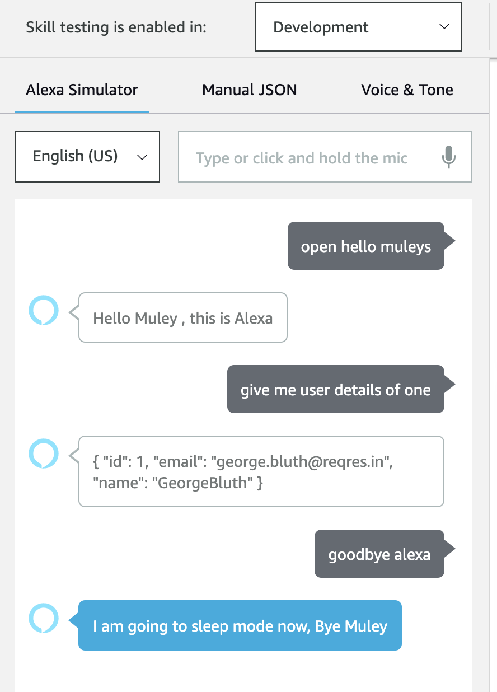
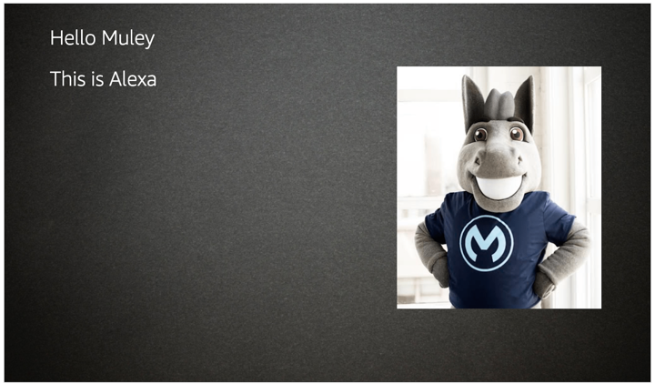
In this codelab, you learned how easy it is to replace an AWS Lambda backend with an API designed and developed using Anypoint Platform. While we only created the implementation part using Anypoint studio, generally you would design it first using the Design Centre and the implementation part would be handled by Anypoint Studio . This can be further enhanced to create cool Voice over Mule connected Apps like starting and stopping Mule apps using Alexa.
Resources